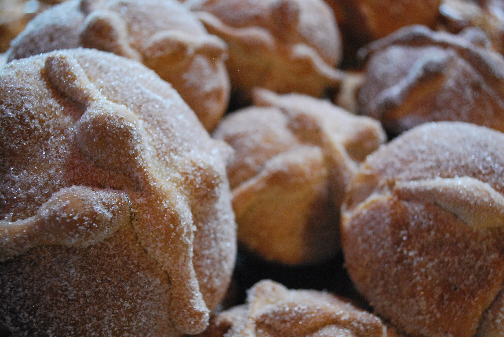

Pan de Muerto
Home

Description
Sweetened bread traditionally made for Día de los Muertos on November 2 in Mexico.
Ingredients
Bread:
- 1/4 cup milk
- 1/4 cup butter
- 1/4 cup warm water (110 degrees F/45 degrees C)
- 3 cups all-purpose flour
- 1/4 cup white sugar
- 2 teaspoons anise seed
- 1 1/4 teaspoons active dry yeast
- 1/2 teaspoon salt
- 2 large eggs, beaten
- 1 tablespoon orange zest
Glaze:
- 1/4 cup white sugar
- 1/4 cup orange juice
- 2 teaspoons orange zest
- 2 tablespoons white sugar
Directions
- Gather the ingredients.
- To make the bread: Heat milk and butter in a medium saucepan over low heat until butter melts. Remove from heat and add warm water. Mixture should be around 110 degrees F (43 degrees C).
- Combine 1 cup flour, sugar, anise seed, yeast, and salt in a large bowl. Beat in warm milk mixture, then add eggs and orange zest; beat until well combined. Stir in 1/2 cup flour and continue adding more flour until dough is soft.
- Turn dough out onto a lightly floured surface; knead until smooth and elastic. Place dough into a lightly greased bowl. Cover with plastic wrap and let rise in a warm place until doubled in size, 1 to 2 hours.
- Punch dough down and shape into a large round loaf with a round knob on top. Place dough onto a baking sheet; loosely cover with plastic wrap. Let rise in a warm place until just about doubled in size, about 1 hour.
- Preheat the oven to 350 degrees F (175 degrees C). Bake in the preheated oven until golden brown, 35 to 45 minutes. Cool slightly before brushing with glaze.
- To make the glaze: Combine 1/4 cup sugar, orange juice, and orange zest in a small saucepan. Bring to a boil over medium heat and boil for 2 minutes.
- Brush glaze over top of warm bread. Sprinkle with 2 tablespoons sugar.